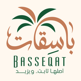
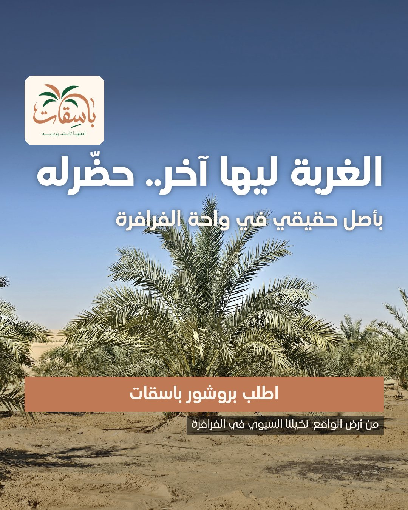

نفس الجملة، والصورة من الأرض
الجملة دي هي اللي شغالة كويس مع المصريين في الخليج، فسيبناها زي ما هي وغيرنا الصورة، وصلحنا كام حاجة صغيرة في النص (مكتوبة تحت). كده لو جاب نفس النتيجة نبقى متأكدين إن صورة الأرض مش هتخسرنا حاجة.

سنين بتعدّي في الشغل والسفر، وكل مرة بترجع فيها مصر بتسأل نفسك نفس السؤال: أنا بنيت هنا إيه؟
العقار غالي ومحتاج متابعة. والدهب بيحافظ على قيمته بس مش بيجيب دخل. والفلوس في البنك التضخم بياكلها.
فيه اختيار تاني: مشاركة في مشروع نخيل مجدول في واحة الفرافرة، بإدارة احترافية كاملة، وتقارير بتوصلك وإنت في مكانك.
الأرض مخصصة بأمر تخصيص رسمي من محافظة الوادي الجديد، والآبار محفورة، وشبكة الري موجودة.
والنخل أصل بياخد وقته: الإنتاج بيبدأ من السنة الرابعة تقريباً، وبنوضّحلك الأرقام كلها في المحادثة.
افهم الأول وبعدين قرر، ومن غير ما حد يستعجلك. اطلب بروشور باسقات، أو ابدأ محادثة على الواتساب.

اضغط على أي مقاس تشوف الصورة بالحجم الكامل.
الصورة: نخلنا السيوي في الفرافرة، من صور زيارة 10 يناير اللي على الدرايف بتاعكم. مفيش فيها أي حد، ومحدش عدّل فيها بالذكاء الاصطناعي، اتقصّت واتظبطت إضاءتها بس.
- الكلام على الصورة
- الغربة ليها آخر.. حضّرله / بأصل حقيقي في واحة الفرافرة / اطلب بروشور باسقات
- العنوان تحت الصورة
- باسقات: أصلها ثابت.. ويزيد
- السطر اللي تحته
- سيب رقمك ونبعتلك بروشور باسقات على الواتساب
- الزرار
- معرفة المزيد
- بيودّي على
- https://start.basseqat.com/start?v=expat
اللي اتغير عن الإعلان القديم
- الصورة: صورة من أرضكم في الفرافرة بدل صورة المطار المعمولة بالذكاء الاصطناعي
- «حمّل دليل باسقات» بقت «اطلب بروشور باسقات»، الاسم اللي اتفقنا عليه
- شلنا «ناس كتير اختارته قبلك» لأن مفيش رقم يأكدها
- زودنا التخصيص الرسمي والآبار والري، وإن الإنتاج بيبدأ من السنة الرابعة تقريباً، زي ما هو مكتوب في صفحة المغتربين